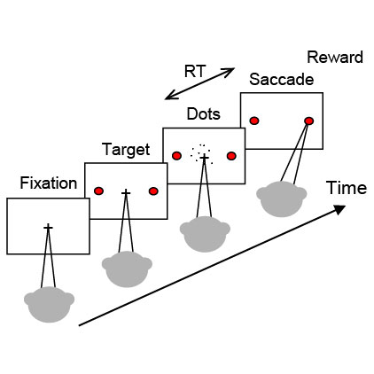

The drift-diffusion model

Assumptions (for 2-alternative choice tasks)
- At a given moment, evidence is a random draw from a Gaussian distribution ~ (μ, 1);
- μ is linearly related to stimulus strength Coh ;
- Evidence is accumulated over time into a decision variable (DV);
- There are two decision bounds associated with the two chioces (the distance between the two bounds is a);
- If DV reaches the upper bound first, choice 1 is made; alternatively, if DV reaches the lower bound first, chioce 2 is made; in either case, accumulation is terminated;
- The time between the start and end of accumulation is the decision time;
- Reaction time is the sum of the decision time and non-decision-related processing time (e.g., sensory delay and movement initiation).
|
The dots task used for simulation

Main Features
- Subject looks at a random-dot kinematogram and decides on the global motion of the dots;
- Subject can indicate the decision at any time;
- Reaction time (RT) is measured from dots onset to initiation of the decision-indicating action;
- Motion direction is constant in a trial; the left/right directions are randomly interleaved across trials;
- Motion strength (expressed as Coh, fraction of dots moving in the same direction) is randomly picked from (0.512, 0.256, 0.128, 0.064, 0.032) for a trial;
Motion strength is constant in a trial but the actual value at a given moment fluctuates;
- Correct choices are rewarded; error trials are not rewarded.
|